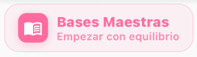
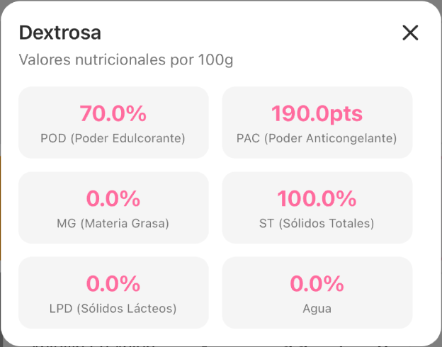
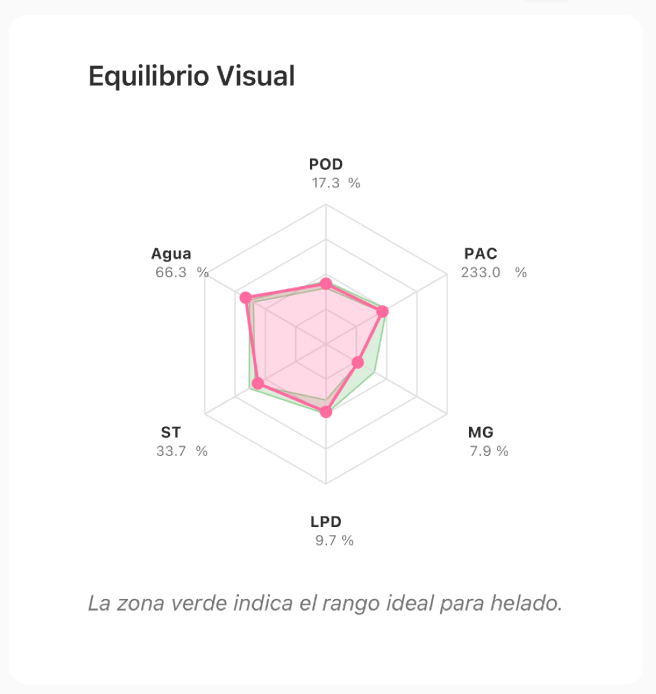
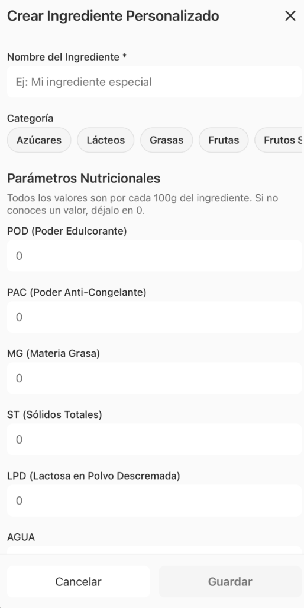
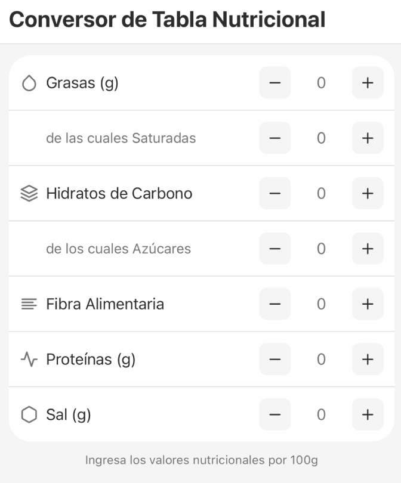

No se encontraron resultados para tu búsqueda.
Manual de Usuario
Domina la ciencia del helado artesanal con precisión, tecnología y un flujo de trabajo profesional.
Tu Centro de Control
Ice Cream Mix ha sido diseñado para que la formulación sea inmediata. La interfaz se divide en un acceso rápido a las funciones más potentes mediante el menú inferior y los accesos directos de la pantalla de inicio.
Pantalla Principal: Acceso directo a la creación y gestión.
Navegación Eficiente
El menú inferior te permite saltar entre las áreas clave de tu obrador digital en un solo toque:
- Inicio: Resumen de tu actividad, tips y acceso a ingredientes.
- Crear: El laboratorio central donde diseñas tus fórmulas gramo a gramo.
- Maestro: El asistente para generar recetas desde cero.
- Recetario: Tu biblioteca personal de fórmulas guardadas.
- Ajustes: Configura tu perfil, preferencias y suscripción.
Diseña tu receta desde cero con control total sobre cada componente y parámetro técnico.
Genera fórmulas equilibradas automáticamente partiendo de un sabor y un tipo de base.
Accede directamente a tu base de datos para añadir, escanear o editar tus materias primas.
Acceso directo a tus Bases Maestras para retomar el trabajo donde lo dejaste.
Tus últimas creaciones siempre a mano con indicadores de estado actualizados.
1. Panel de Indicadores
El laboratorio central de la app. Aquí es donde diseñas tus recetas con control total sobre cada gramo y monitoreas el equilibrio técnico al instante.
Interfaz de Creación: Panel superior de control y área de composición.
El Panel de Indicadores
En la parte superior verás 8 indicadores que se actualizan en tiempo real. Entender estas siglas es clave para controlar el resultado final de tu helado. Puedes consultar la Guía de Rangos Recomendados más abajo para orientarte sobre los valores óptimos según el tipo de receta:
POD (Sensación de Dulzor)
Mide cuánto endulza la mezcla. Es clave para el sabor y la palatabilidad.
- Bajo: Helado soso.
- Alto: Empalagoso.
PAC (Poder Anticongelante)
Controla la dureza a la temperatura de servicio. Define la estructura del helado.
- Bajo: Helado duro.
- Alto: Helado blando.
MG (Materia Grasa)
Aporta cremosidad, cuerpo y transmite los sabores de forma equilibrada.
ST (Sólidos Totales)
La suma de todos los componentes secos. Evita cristales de hielo molestos.
LPD (Sólidos Lácteos)
Proteínas y lactosa que dan estructura y ayudan a atrapar el aire (overrun).
AGUA (Contenido H2O)
Controla la cantidad de líquido libre. Un exceso crea texturas acuosas.
Peso total: Total de la receta en gramos (formulación recomendada: 1.000 g).
Temp. Servicio (TP): La temperatura ideal estimada para servir este helado.
Guía de Rangos Recomendados
Para que un helado sea perfecto, sus parámetros deben estar dentro de unos rangos específicos. El Maestro Heladero utiliza estos valores para avisarte de cualquier desequilibrio:
| Parámetro | RECETAS BASE LÁCTEA (HELADO) | RECETAS BASE AGUA (SORBETE) | ||||
|---|---|---|---|---|---|---|
| PREMIUM | MEDIUM | BASIC | PREMIUM | MEDIUM | BASIC | |
| MG (Grasa) | 12 - 16% | 8 - 12% | 4 - 8% | 0% | 0% | 0% |
| LPD (Lácteos) | 10 - 12% | 8 - 10% | 6 - 8% | 0% | 0% | 0% |
| POD (Dulzor) | 17 - 20% | 16 - 18% | 14 - 16% | 25 - 28% | 22 - 25% | 20 - 22% |
| PAC (Anticong.) | 240 - 260 | 230 - 250 | 220 - 240 | 300 - 320 | 280 - 300 | 270 - 290 |
| ST (Sólidos) | 38 - 42% | 35 - 38% | 32 - 35% | 30 - 32% | 28 - 30% | 26 - 28% |
| Agua (H2O) | 58 - 62% | 60 - 63% | 63 - 66% | 68 - 72% | 70 - 73% | 72 - 75% |
Composición de la Receta
Define los cimientos de tu creación:
- Título: Ponle un nombre único a tu receta.
- Base: Elige entre Helado (lácteo) o Sorbete (agua). Los parámetros ideales cambiarán según esta elección.
- Calidad: Define el nivel (Premium, Medium, Basic) para ajustar los rangos de equilibrio aconsejadores.
- Bases Maestras: Pulsa este botón () para cargar una estructura equilibrada y empezar a modificarla.
Gestión de Ingredientes
Añade y ajusta tus materias primas con precisión profesional:

Barra de Acciones
Bajo los selectores principales tienes accesos rápidos para:
- Modo Lista: Alterna entre la vista de edición y de solo lectura.
- Normalizar a 1000g: Ajusta automáticamente todas las cantidades para que el total de tu mezcla sea de 1kg exacto.
- Deshacer/Rehacer: ¿Te has equivocado con un gramaje? Vuelve atrás fácilmente.
Ver Gráfico de Balance

El radar visual te permite ver de un vistazo si los 6 parámetros clave están dentro de la zona verde (ideal).
Sugerencias del Maestro
Cuando la app detecta un desequilibrio técnico (valores en rosa), el Maestro te ofrecerá soluciones automáticas:
Panel de sugerencias con soluciones para corregir el exceso de POD y PAC.
2. El Maestro Heladero
Nuestro sistema avanzado genera recetas equilibradas automáticamente.
Elige sabor, base y calidad. El Maestro Heladero hace el resto.
Modos de Formulación
Estándar: Algoritmo optimizado para recetas clásicas, asegurando un equilibrio perfecto con ingredientes tradicionales.
Profesional (PRO): Precisión avanzada para texturas de alta gama, con control exhaustivo de todos los parámetros técnicos.
Configuración de la Fórmula

Sabor y Base: Define el alma de tu helado. Indica el sabor y selecciona si es una base láctea o un sorbete base agua.
Calidad: Ajusta los rangos de sólidos y grasas seleccionando entre calidad Básica, Media o Premium.
Temperatura de Servicio
Una función exclusiva de la Formulación Profesional. Indica al Maestro a qué temperatura vas a servir tu helado y él recalculará el PAC (Poder Anticongelante) necesario para que la textura sea perfecta en ese punto exacto.
Suave (Vitrina): Mayor PAC para mantener el helado servible a temperaturas altas (entre -5°C y -11°C).
Estándar: El punto de equilibrio ideal para la mayoría de vitrinas profesionales (entre -12°C y -17°C).
Duro (Congelador): Menor PAC para evitar que se vuelva piedra en congeladores domésticos (entre -18°C y -24°C).
Generación Inteligente
Una vez configurado, el botón Generar Fórmula activará el sistema para entregarte una receta pesada y equilibrada lista para usar.
Cómo funciona
- Escribe el sabor deseado (ej: "Chocolate Belga", "Mango y Maracuyá").
- Elige la Base (Agua para sorbetes o Láctea para helados).
- Selecciona la Calidad (Económica, Estándar o Premium).
- Pulsa "Generar Fórmula" y deja que el Maestro equilibre los parámetros por ti.
3. Mis Ingredientes (Base de Datos)
Gestión de Ingredientes
Organiza y edita tu despensa digital. Usa el buscador superior para encontrar rápidamente cualquier producto.
Base de datos de ingredientes.
Filtra rápidamente entre los ingredientes del sistema y tus creaciones personales.
- Sistema Ingredientes Pre-cargados: Base de datos verificada con los productos más comunes.
- Míos Tus Ingredientes: Los que tú has añadido manualmente o escaneado.
Nota: Puedes pulsar en cualquier ingrediente para editar sus valores si lo necesitas.
Añadir Nuevo Ingrediente
Personaliza tu base de datos con tus propios productos. Pulsa el botón "Crear Nuevo" para comenzar:

Elige el método que mejor se adapte a ti.
Introduce los valores POD, PAC y demás parámetros a mano.
Usa la cámara para leer la etiqueta y calcula automáticamente los valores.
Sube una foto de la tabla nutricional desde tu galería.
Calcula valores desde una tabla nutricional estándar.
Creación Manual
Ideal si ya tienes la ficha técnica del producto. Completa los campos de POD, PAC, Materia Grasa, Sólidos y Lactosa.
Conversor de Tabla Nutricional
Si solo tienes la etiqueta del supermercado, introduce los valores por cada 100g y el sistema estimará los parámetros técnicos.
4. Tu Recetario
Gestión inteligente de recetas con estados de producción en tiempo real.
Guarda tus creaciones favoritas, duplícalas para hacer variaciones o compártelas como PDF.
Acciones Rápidas
Cada receta en tu recetario tiene botones de acción rápida:
- Control de Producción: Inicia una sesión de Pasteurización, Enfriamiento, Maduración o Mantecado directamente desde la tarjeta.
- Alarma de Maduración: Programa un recordatorio para cuando tu mezcla esté lista.
- Favoritos: Marca tus recetas más usadas para encontrarlas rápido.
- Duplicar: Crea una copia para experimentar sin perder la original.
- Eliminar: Borra las recetas que ya no necesites.
Estados de la Alarma
La maduración está en proceso. Verás el tiempo restante en la tarjeta.
¡La maduración se ha completado! Tu mezcla está lista para mantecar.
Esta receta no tiene alarma asignada. Toca para programar una.
Alarma de Maduración
La maduración es el tiempo de reposo en frío (2-4°C) que necesita tu mezcla para hidratar proteínas y estabilizantes. Desde el Recetario puedes programar alarmas para no olvidarte de mantecar.
Configura alarmas con tiempos predeterminados o personalizados.
Mínimo: 4 horas
Óptimo: 8-12 horas
Máximo: 72 horas
Mínimo: 2 horas
Óptimo: 4-6 horas
Máximo: 24-48 horas
5. Control de Producción
Procesos Personalizados
Optimiza tu flujo de trabajo configurando procesos para cada receta. Accede pulsando el icono de portapapeles () en la tarjeta de cualquier receta.
Configura los tiempos de Pasteurización, Enfriamiento, Maduración y Mantecado.
Seguimiento en Tiempo Real
Una vez iniciado un proceso, aparecerá una barra de progreso directamente en la tarjeta de la receta para que puedas monitorear el estado sin entrar en el detalle.
Fase de Calor (Naranja)
Fase de Frío (Azul)
Fase de Reposo (Amarillo)
Fase de Turbinado (Verde)
¿Qué es el Overrun?
Es la cantidad de aire que incorporas a tu helado durante el mantecado. El aire es clave para una textura suave.
Mide el rendimiento real de tu mantecadora introduciendo el peso de la mezcla y del helado terminado.
6. Multiplicar Fórmula
¿Tienes una receta perfecta para 1kg pero necesitas producir 50kg? No uses la calculadora a mano.
Convierte tu receta a producción industrial en un click.
Pasos:
- Entra en tu fórmula guardada en el Recetario.
- Pulsa la opción "Multiplicar Fórmula".
- Usa los botones rápidos (x2, x3, x4, x5) para multiplicar al instante.
- O introduce manualmente el Peso Total Objetivo (ej: 5000g).
- La app recalculará instantáneamente todos los ingredientes manteniendo el equilibrio perfecto.